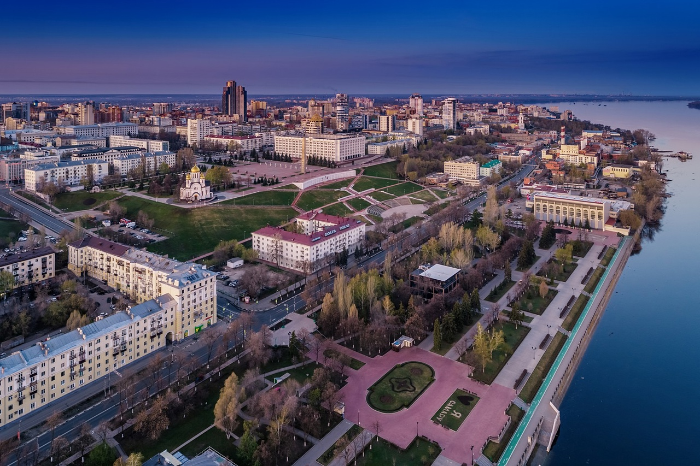

Ответ на вопрос, куда поехать отдыхать в России, может поставить в тупик. В нашей стране немало уголков с уникальной природой, достопримечательностями и заповедниками. Всегда есть возможность уединиться на пляже или отправиться в горный поход, погулять по площадям и паркам какого-то города или ехать сотни километров до ближайшего населённого пункта. Всех интересных мест не перечислить, но мы постарались — собрали направления, где в России можно отдохнуть, если вы любите пляжный отдых, горы, прогулки по городам или хотите увидеть всё и сразу. Читайте и выбирайте по своим предпочтениям.
Самара, возможно, не самый очевидный вариант для отдыха в России. И зря! Город стоит на слиянии рек Волги и Самары, и здесь одна из самых длинных набережных в России, которая тянется более чем на 4 км вдоль Волги. Если устанете гулять, можно спуститься на пляж и посидеть на песке у воды, а летом даже поплавать.
Прогуляйтесь по историческому центру. Здесь десятки улиц купеческой кирпичной и деревянной застройки, и вы встретите разнообразные архитектурные стили — от классицизма и барокко до модерна и конструктивизма. Посмотрите бывшие купеческие дома — особняк Клодта, похожий на теремок, и дом купчихи Курлиной в стиле модерн. Затем можно переместиться в советское прошлое, посетив секретный бункер Сталина на глубине 37 метров под зданием Самарской академии культуры и искусств или погрузившись в эпоху космических достижений в музейно-выставочном комплексе «Самара Космическая». Сюда входят здание музея и возвышающийся над ним уникальный монумент — настоящая ракета «Союз». Поездка в Самару часто включает посещение старейшего пивоваренного завода России, который работает с конца XIX века. Можно даже запланировать там обед с разливным, но людей обычно много, и довольно сложно найти свободный столик, особенно если вы едете компанией. Зайдите также в музей Эльдара Рязанова, чтобы увидеть комнату, в которой будущий режиссёр родился и жил в годы эвакуации. В 2023 году должен открыться филиал Третьяковской галереи, который будет располагаться в уникальном памятнике конструктивизма — здании в форме серпа и молота.